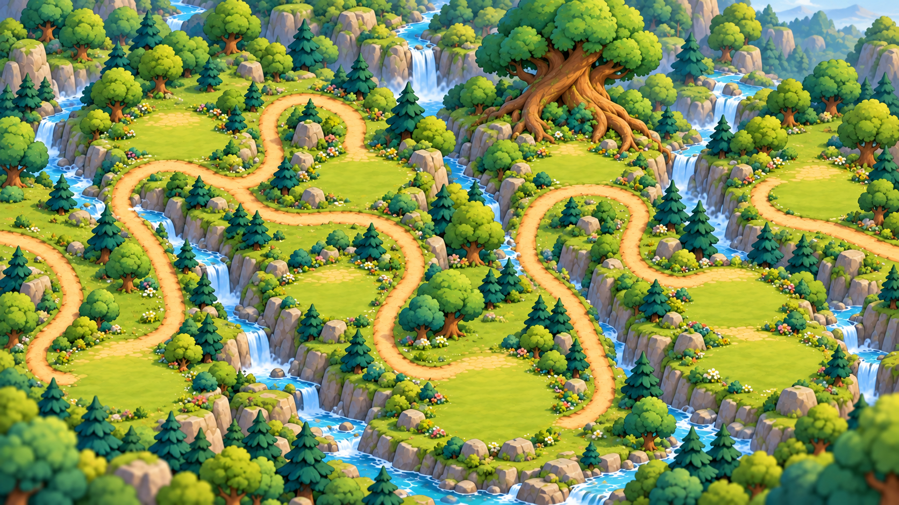

Khối tròn, mái lớn, thân thấp và chi tiết giản lược để hợp nền mới. Độ phức tạp tăng dần từ túp lều đến lâu đài.

Hàng 5 sao ở đây do HTML dựng để xem khoảng trống bên dưới; không nằm trong PNG công trình.